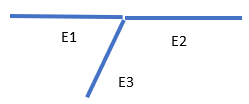
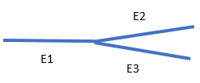
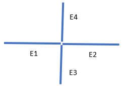
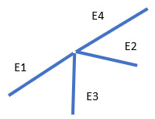

ENDRELEASE,
--, TOLERANCE,
Dof1, Dof2,
Dof3, Dof4,
KJCT
Specifies degrees of freedom to be decoupled for end release.
--Unused field.
TOLERANCEAngle tolerance (in degrees) between adjacent elements. Default = 20. Set
TOLERANCEto -1 to release all selected elements.Dof1,Dof2,Dof3,Dof4Degrees of freedom to release. If
Dof1is blank, WARP is assumed andDof2,Dof3, andDof4are ignored.WARP
—
Release the warping degree of freedom (default).
ROTX
—
Release rotations in the X direction.
ROTY
—
Release rotations in the Y direction.
ROTZ
—
Release rotations in the Z direction.
UX
—
Release displacements in the X direction.
UY
—
Release displacements in the Y direction.
UZ
—
Release displacements in the Z direction.
BALL
—
Create ball joints (equivalent to releasing WARP, ROTX, ROTY, and ROTZ).
KJCTBehavior at a junction node (a node shared by more than two elements):
0 (or blank) – Release all elements. TOLERANCEis ignored.1 – Release noncontinuous elements (if only one pair of continuous elements exists). This argument is ignored (due to ambiguity) if
KJCT= 1 and multiple pairs of continuous elements exist.This argument is ignored if
TOLERANCE= -1.
Notes
This command specifies end releases for the BEAM188,
BEAM189, PIPE288, and
PIPE289 elements. The command works on currently selected nodes and
elements. It creates end releases on any two connected beam elements whose angle at connection
exceeds TOLERANCE.
From within the GUI, the Picked node option generates an end release at
the selected node regardless of the angle of connection (TOLERANCE =
-1).
Table 112: Possible End-Release Conditions at a Junction Node when KJCT =
1
| Junction Node Example | Behavior |
|---|---|
 | E2 is not released. E3 is released. A new node is generated for E3. |
 | E2 and E3 are released if the angles between E1-E2 and E1-E3 are within tolerance (two continuous pairs). |
 | E2, E3, and E4 are released regardless of KJCT (two
continuous pairs). |
 | E4 is not released. E2 and E3 are released. New nodes are generated for E3 and E4. |
To list the coupled sets generated by this command, issue CPLIST.
Exercise engineering judgement when using this command. Improper use may result in mechanics that render a solution impossible.